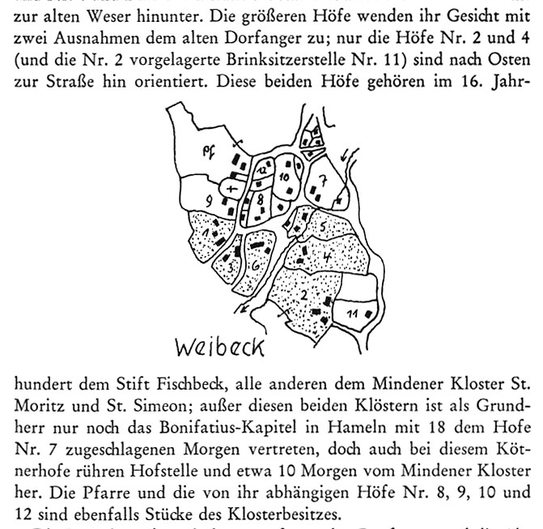
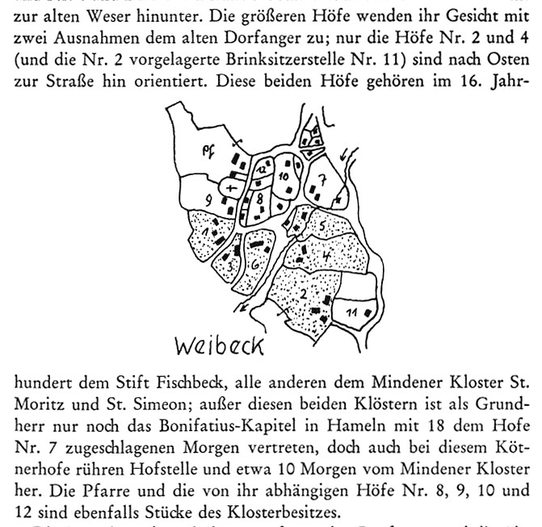

Dorfgrundrisse (ca. 1770) - nach "Dörfer und Fluren des Rintelner Beckens", Schaumburger Studien Heft 5, Walter Maack, 1964
Bild 33 (38 insgesamt) << zurück weiter >>
|  |
<< zurück zur Bildübersicht
|  |
Historische Arbeitsgemeinschaft für Schaumburg | Schlossplatz 2 | 31675 Bückeburg | Tel.: 05722 / 967730 | Fax: 05722 / 1289